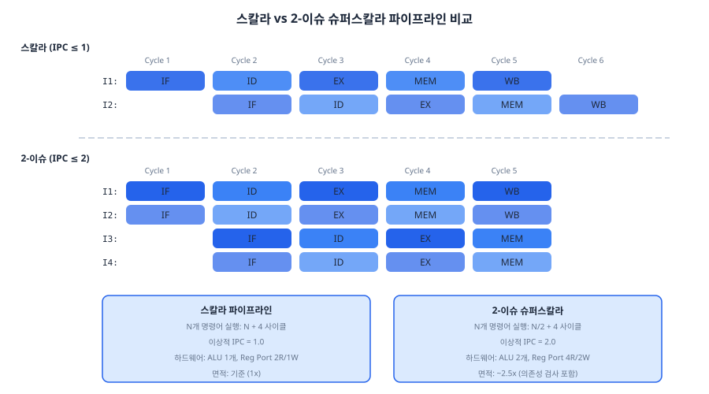
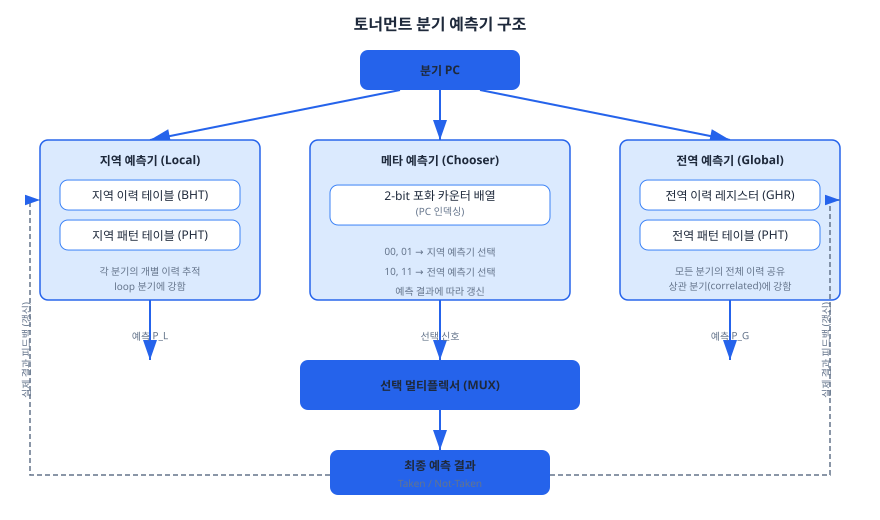
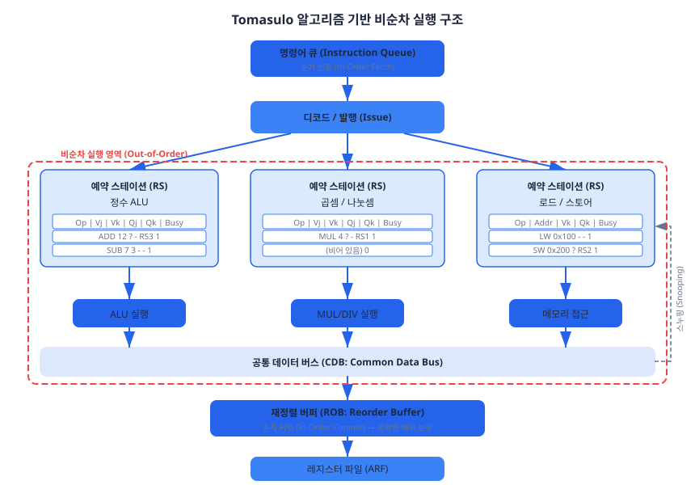
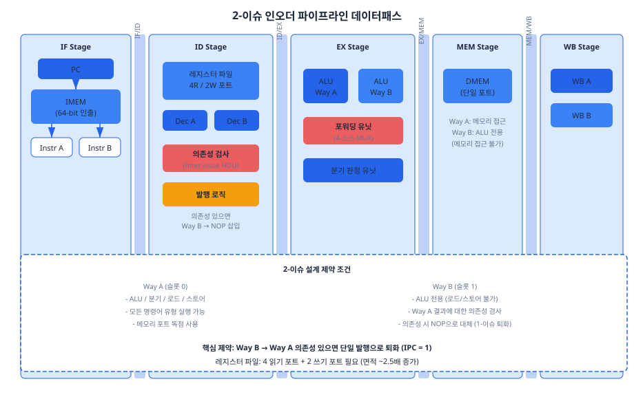

Chapter 09~12에서 완성한 5단계 파이프라인 프로세서는 이상적 조건에서 IPC(Instructions Per Cycle) = 1을 달성합니다. 그러나 현대 고성능 프로세서는 이 한계를 넘어 IPC > 1을 추구합니다. 이 챕터에서는 슈퍼스칼라(Superscalar) 구조, 토너먼트 분기 예측기(Tournament Branch Predictor), 비순차 실행(Out-of-Order Execution)의 핵심 개념을 탐구하고, 직접 간단한 2-이슈 구조를 설계하는 미니 프로젝트를 수행합니다.
Chapter 09에서 우리는 파이프라인의 이상적 처리율(throughput)이 매 클럭 사이클당 1개 명령어, 즉 IPC(Instructions Per Cycle) = 1이라고 배웠습니다. 이는 스칼라(Scalar) 파이프라인의 이론적 상한입니다. 그런데 만약 매 사이클마다 2개 이상의 명령어를 동시에 인출하고, 디코드하고, 실행할 수 있다면 어떨까요? 이것이 바로 슈퍼스칼라(Superscalar) 프로세서의 핵심 아이디어입니다.
IPC = 1은 스칼라 파이프라인의 이상적 한계입니다. Chapter 10~11에서 경험했듯이, 실제로는 데이터 해저드와 제어 해저드로 인해 스톨(stall)과 플러시(flush)가 발생하여 IPC < 1이 됩니다. 슈퍼스칼라 프로세서는 이 한계를 근본적으로 돌파합니다. N-이슈(N-issue) 슈퍼스칼라는 매 사이클 최대 N개의 명령어를 동시에 처리하여, 이상적 IPC = N을 목표로 합니다.
현대 고성능 프로세서의 이슈 폭(issue width)은 다음과 같습니다.
| 프로세서 | 이슈 폭 | 파이프라인 단계 | 비순차 실행 |
|---|---|---|---|
| ARM Cortex-M4 | 1-이슈 (스칼라) | 3단계 | 없음 |
| ARM Cortex-A55 | 2-이슈 (인오더) | 8단계 | 없음 |
| ARM Cortex-A78 | 4-이슈 (비순차) | 13단계 | 있음 |
| Apple M2 (Avalanche) | 8-이슈 (비순차) | ~16단계 | 있음 |
| SiFive U74 (RISC-V) | 2-이슈 (인오더) | 8단계 | 없음 |
위 표에서 주목할 점은 이슈 폭이 넓어질수록 파이프라인 단계 수도 함께 증가하는 경향입니다. 이는 넓은 이슈 폭에서 발생하는 복잡한 의존성 검사, 레지스터 이름 변경(register renaming), 명령어 스케줄링 등의 로직이 추가 파이프라인 단계를 요구하기 때문입니다.
N-이슈 슈퍼스칼라 프로세서를 구현하려면, 기존 스칼라 파이프라인의 거의 모든 구성 요소를 확장해야 합니다. 이를 스테이지별로 살펴보겠습니다.
1. IF 스테이지 — 다중 명령어 인출: 매 사이클 N개의 명령어를 동시에 인출해야 합니다. 이를 위해 명령어 캐시(I-Cache)의 읽기 대역폭이 N배로 증가해야 합니다. 2-이슈 프로세서의 경우, 한 사이클에 64비트(32비트 × 2)를 인출합니다. 여기서 발생하는 문제가 인출 정렬(fetch alignment)입니다. 만약 분기 목표 주소가 8바이트 경계의 중간에 위치하면, 첫 번째 인출에서 유효한 명령어는 1개뿐입니다.
2. ID 스테이지 — 다중 디코더와 의존성 검사: N개의 독립적인 디코더가 필요합니다. 더 중요한 것은 N개 명령어 사이의 이슈 간 의존성(inter-issue dependency)을 검사하는 로직입니다. 2-이슈에서는 명령어 A와 B 사이의 의존성 1쌍만 검사하면 되지만, 4-이슈에서는 6쌍(₄C₂ = 6), 8-이슈에서는 28쌍(₈C₂ = 28)을 검사해야 합니다. 의존성 검사 복잡도는 O(N²)으로 증가합니다.
3. EX 스테이지 — 다중 실행 유닛: ALU, 곱셈기, 분기 유닛 등 실행 유닛을 복제해야 합니다. 모든 유닛을 N개씩 복제하면 면적이 급증하므로, 실무에서는 명령어 유형별로 차별화합니다. 예를 들어, ALU는 4개이지만 곱셈기는 2개, 로드/스토어 유닛은 2개와 같은 비대칭 구성이 일반적입니다.
4. 레지스터 파일 — 다중 포트: 2-이슈에서 레지스터 파일은 4개 읽기 포트(2개 명령어 × 2개 소스)와 2개 쓰기 포트가 필요합니다. 레지스터 파일의 면적은 포트 수의 제곱에 비례하여 증가합니다. 이는 슈퍼스칼라 확장의 가장 큰 물리적 병목 중 하나입니다.

슈퍼스칼라의 이슈 폭을 넓히면 이론적 IPC는 비례하여 증가하지만, 실제 IPC는 명령어 수준 병렬성(ILP, Instruction-Level Parallelism)의 한계로 포화됩니다. 아래 표는 이슈 폭에 따른 하드웨어 복잡도와 실제 성능의 관계를 정리한 것입니다.
| 이슈 폭 | 이상적 IPC | 실제 IPC (일반 프로그램) | 의존성 검사 쌍 수 | 레지스터 파일 포트 | 상대 면적 |
|---|---|---|---|---|---|
| 1 (스칼라) | 1.0 | 0.5 ~ 0.8 | 0 | 2R / 1W | 1.0x |
| 2 | 2.0 | 1.0 ~ 1.5 | 1 | 4R / 2W | ~2.5x |
| 4 | 4.0 | 1.5 ~ 2.5 | 6 | 8R / 4W | ~6x |
| 8 | 8.0 | 2.0 ~ 3.5 | 28 | 16R / 8W | ~15x |
이 표에서 핵심적인 교훈은 수확 체감의 법칙(diminishing returns)입니다. 이슈 폭을 2배로 늘려도 실제 IPC는 2배가 되지 않습니다. 4-이슈에서 8-이슈로 확장할 때, 면적은 2.5배 증가하지만 실제 IPC 향상은 30~40%에 불과합니다. 이것이 대부분의 임베디드 RISC-V 코어가 2-이슈 인오더(in-order) 구조를 채택하는 이유입니다. 복잡도 대비 성능 효율이 가장 높은 "최적점(sweet spot)"이기 때문입니다.
슈퍼스칼라 프로세서는 명령어 발행 방식에 따라 크게 두 가지로 분류됩니다.
인오더 슈퍼스칼라(In-Order Superscalar): 명령어를 프로그램 순서대로 발행합니다. 만약 현재 명령어가 이전 명령어의 결과를 기다려야 한다면, 해당 명령어뿐 아니라 그 뒤의 모든 명령어도 함께 대기합니다. 구현이 상대적으로 단순하며, 임베디드 프로세서에 적합합니다. ARM Cortex-A55, SiFive U74 등이 이 방식을 채택합니다.
비순차 슈퍼스칼라(Out-of-Order Superscalar): 데이터 의존성이 해소된 명령어를 프로그램 순서와 무관하게 실행합니다. 앞선 명령어가 대기 중이더라도 독립적인 뒤쪽 명령어를 먼저 실행할 수 있어 IPC가 크게 향상됩니다. 다만, 재정렬 버퍼(ROB), 레지스터 이름 변경(register renaming), 예약 스테이션(reservation station) 등 복잡한 하드웨어가 추가됩니다. 23.3절에서 이 주제를 자세히 다룹니다.
Chapter 11에서 우리는 2-비트 포화 카운터(saturating counter) 기반의 동적 분기 예측을 배웠습니다. 이 단순한 예측기도 약 85~90%의 예측률을 달성했습니다. 그러나 슈퍼스칼라 프로세서에서는 분기 오예측의 비용이 스칼라보다 훨씬 큽니다. 2-이슈 프로세서에서 1사이클 플러시는 2개 명령어의 손실을 의미하기 때문입니다. 따라서 고성능 프로세서는 95% 이상의 예측률을 목표로 더 정교한 분기 예측기를 사용합니다.
토너먼트 분기 예측기(Tournament Branch Predictor)는 서로 다른 강점을 가진 두 개의 예측기를 조합하고, 메타 예측기(Meta-Predictor 또는 Chooser)가 상황에 따라 더 나은 예측기를 동적으로 선택하는 구조입니다. Alpha 21264 프로세서에서 처음 도입되어, 이후 많은 고성능 프로세서에 채택되었습니다.
지역 예측기(Local Predictor)는 각 분기 명령어의 개별적인 과거 이력을 기반으로 예측합니다. 구조는 두 단계로 이루어집니다.
1단계 — 지역 이력 테이블(Local History Table, BHT): 분기 PC로 인덱싱되는 테이블입니다. 각 엔트리는 해당 분기 명령어의 최근 k번의 실행 결과(Taken/Not-Taken)를 비트열로 저장합니다. 예를 들어, k=8이면 최근 8회의 결과를 8비트 시프트 레지스터에 기록합니다.
2단계 — 지역 패턴 테이블(Local Pattern History Table, PHT): 1단계에서 읽은 지역 이력 비트열을 인덱스로 사용하여 2-비트 포화 카운터에 접근합니다. 이 카운터의 MSB가 예측 결과(Taken/Not-Taken)입니다.
지역 예측기의 강점은 반복 패턴이 있는 루프 분기에 뛰어나다는 것입니다. 예를 들어, for (i=0; i<10; i++)의 분기는 9번 Taken 후 1번 Not-Taken이라는 규칙적 패턴을 보입니다. 지역 예측기는 이 패턴을 개별적으로 학습합니다.
전역 예측기(Global Predictor)는 모든 분기 명령어의 최근 실행 결과를 공유하여 예측합니다.
전역 이력 레지스터(GHR, Global History Register): 프로세서에 하나만 존재하는 시프트 레지스터입니다. 모든 분기 명령어의 결과가 이 레지스터에 순차적으로 기록됩니다. 예를 들어, GHR = 8'b11010110이면 최근 8개 분기 중 5개가 Taken, 3개가 Not-Taken이었음을 의미합니다.
전역 패턴 테이블(Global PHT): GHR 값을 인덱스로 사용하여 2-비트 포화 카운터에 접근합니다.
전역 예측기의 강점은 상관 분기(Correlated Branch)를 잘 예측한다는 것입니다. 예를 들어, if (x > 0) 직후의 if (x > 5)는 첫 번째 분기 결과와 강한 상관관계를 가집니다. 전역 예측기는 이러한 분기 간 상관관계를 GHR을 통해 포착합니다.
메타 예측기는 지역 예측기와 전역 예측기 중 어느 쪽이 더 정확한지를 동적으로 추적합니다. 역시 2-비트 포화 카운터 배열로 구현됩니다.
갱신 규칙은 다음과 같습니다.
| 지역 예측 | 전역 예측 | 실제 결과 | 메타 예측기 동작 |
|---|---|---|---|
| 정확 | 정확 | — | 갱신하지 않음 (두 예측기 모두 올바름) |
| 정확 | 오류 | — | 카운터 감소 (지역 선호도 증가) |
| 오류 | 정확 | — | 카운터 증가 (전역 선호도 증가) |
| 오류 | 오류 | — | 갱신하지 않음 (어느 쪽도 나을 것 없음) |
이 갱신 규칙의 핵심은 두 예측기의 결과가 다를 때만 메타 예측기를 갱신한다는 것입니다. 두 예측기가 동일한 결과를 내면, 그 예측이 맞든 틀리든 메타 예측기는 변하지 않습니다. 이것은 불필요한 갱신을 줄여 안정성을 높이는 설계입니다.

아래는 토너먼트 분기 예측기의 핵심 구조를 SystemVerilog로 구현한 코드입니다. 전체 코드는 code_examples/ch23_tournament_predictor.sv에 수록되어 있으며, 여기서는 메타 예측기의 갱신 로직을 중심으로 살펴봅니다.
// 메타 예측기 (Chooser) — 2-bit 포화 카운터
// 00, 01: 지역 예측기 선택 / 10, 11: 전역 예측기 선택
logic [1:0] chooser [0:LOCAL_DEPTH-1];
always_ff @(posedge clk or negedge rst_n) begin
if (!rst_n) begin
for (int i = 0; i < LOCAL_DEPTH; i++)
chooser[i] <= 2'b10; // 초기: 전역 예측기 약간 선호
end else if (update_en_i) begin
logic local_correct, global_correct;
local_correct = (local_pht[local_pht_upd_idx][1] == actual_taken_i);
global_correct = (global_pht[global_pht_upd_idx][1] == actual_taken_i);
if (local_correct && !global_correct) begin
// 지역이 맞고 전역이 틀림 → 지역 선호도 증가
if (chooser[upd_idx] > 2'b00)
chooser[upd_idx] <= chooser[upd_idx] - 1;
end else if (!local_correct && global_correct) begin
// 전역이 맞고 지역이 틀림 → 전역 선호도 증가
if (chooser[upd_idx] < 2'b11)
chooser[upd_idx] <= chooser[upd_idx] + 1;
end
// 둘 다 맞거나 둘 다 틀리면 갱신하지 않음
end
end
토너먼트 예측기의 효과를 검증하기 위해 테스트벤치(code_examples/ch23_tournament_predictor_tb.sv)에서 다양한 분기 패턴에 대한 예측률을 측정합니다. 대표적인 패턴과 예상 예측률은 다음과 같습니다.
| 분기 패턴 | 2-bit 카운터 (Ch11) | 토너먼트 예측기 | 우세 예측기 |
|---|---|---|---|
| 항상 Taken (루프) | ~96% | ~98% | 지역 |
| 교대 (T/NT/T/NT...) | ~0% | ~80% | 지역 (패턴 학습) |
| 중첩 루프 (5T + 1NT 반복) | ~83% | ~93% | 지역 |
| 상관 분기 (if-else 체인) | ~60% | ~85% | 전역 |
위 결과에서 주목할 점은 교대 패턴입니다. 단순 2-비트 카운터는 교대 패턴을 전혀 예측하지 못하지만(항상 직전 결과를 따르므로), 토너먼트 예측기의 지역 예측기는 "T, NT, T, NT"라는 2비트 이력 패턴을 학습하여 예측할 수 있습니다.
23.1절에서 살펴본 인오더 슈퍼스칼라는 프로그램 순서대로 명령어를 발행합니다. 만약 명령어 A가 이전 명령어의 결과를 기다리고 있다면, A 뒤의 명령어 B가 A와 무관하더라도 함께 대기해야 합니다. 이는 명백한 성능 낭비입니다. 비순차 실행(Out-of-Order Execution, OOO)은 이 문제를 해결합니다. 데이터 의존성이 해소된 명령어를 프로그램 순서와 관계없이 실행하되, 결과를 커밋(commit)할 때는 원래 순서를 복원하는 방식입니다.
다음 코드 시퀀스를 살펴보겠습니다.
// 인오더 실행에서의 성능 병목 예시
lw x1, 0(x10) // I1: 캐시 미스 시 수십 사이클 대기
add x2, x1, x3 // I2: x1에 대한 RAW 의존성 → I1 완료까지 스톨
mul x4, x5, x6 // I3: I1, I2와 무관하지만 인오더에서는 대기
add x7, x8, x9 // I4: I1, I2와 무관하지만 인오더에서는 대기
sub x11, x12, x13 // I5: I1, I2와 무관하지만 인오더에서는 대기
인오더 프로세서에서 I1이 캐시 미스로 20사이클을 대기하면, I2~I5 모두 함께 대기합니다. 그러나 I3, I4, I5는 I1의 결과와 전혀 무관합니다. 비순차 프로세서는 I1이 대기하는 동안 I3, I4, I5를 먼저 실행하여 낭비되는 사이클을 활용합니다.
비순차 실행의 성능 이점은 캐시 미스가 빈번할수록 극대화됩니다. 메모리 지연(memory latency)을 "숨기는(hiding)" 능력이 비순차 실행의 가장 큰 가치이며, 이것이 고성능 프로세서가 비순차 실행을 필수적으로 채택하는 이유입니다.
Robert Tomasulo가 1967년 IBM System/360 Model 91에서 발명한 이 알고리즘은 비순차 실행의 기초를 확립했습니다. 핵심 구성 요소는 다음 세 가지입니다.
1. 예약 스테이션(Reservation Station, RS): 각 실행 유닛 앞에 위치하는 버퍼입니다. 명령어가 발행(issue)되면 예약 스테이션에 등록되고, 필요한 오퍼랜드가 모두 준비될 때까지 대기합니다. 오퍼랜드가 아직 준비되지 않았다면, 그 값을 생산할 예약 스테이션의 태그(식별자)를 기록합니다.
예약 스테이션의 각 엔트리는 다음 필드로 구성됩니다.
| 필드 | 설명 |
|---|---|
Op |
연산 종류 (ADD, SUB, MUL, ...) |
Vj |
첫 번째 소스 오퍼랜드 값 (이미 준비된 경우) |
Vk |
두 번째 소스 오퍼랜드 값 |
Qj |
Vj를 생산할 예약 스테이션 태그 (대기 중인 경우) |
Qk |
Vk를 생산할 예약 스테이션 태그 |
Busy |
해당 엔트리 사용 중 여부 |
2. 공통 데이터 버스(CDB, Common Data Bus): 실행이 완료된 결과를 모든 예약 스테이션과 레지스터 파일에 동시에 브로드캐스트(broadcast)하는 공유 버스입니다. 결과가 브로드캐스트되면, 해당 결과를 기다리고 있던 모든 예약 스테이션이 태그를 비교(스누핑, snooping)하여 일치하는 경우 오퍼랜드 값을 획득합니다.
3. 레지스터 이름 변경(Register Renaming): WAR(Write After Read)과 WAW(Write After Write) 의존성을 제거합니다. Tomasulo의 원래 설계에서는 예약 스테이션 태그 자체가 물리 레지스터 역할을 하여 이름 변경을 암묵적으로 수행합니다. 현대 프로세서에서는 별도의 물리 레지스터 파일(Physical Register File)과 레지스터 앨리어스 테이블(RAT, Register Alias Table)을 사용하는 명시적 이름 변경을 채택합니다.

비순차 실행에서 가장 중요한 문제는 정확한 예외(Precise Exception)의 보장입니다. Chapter 19에서 배웠듯이, 정확한 예외란 "예외 발생 명령어 이전의 모든 명령어는 완료되고, 이후의 모든 명령어는 취소된 상태"를 의미합니다. 비순차 실행에서는 프로그램 순서와 실행 순서가 다르므로, 이 보장이 자명하지 않습니다.
재정렬 버퍼(ROB)는 이 문제를 해결합니다. ROB는 원형 큐(circular queue)로 구현되며, 명령어가 발행될 때 프로그램 순서대로 ROB 엔트리에 등록됩니다. 실행 결과는 먼저 ROB에 기록되고, ROB의 헤드(head)에서 프로그램 순서대로 커밋(commit)됩니다. 커밋된 결과만이 아키텍처 레지스터 파일(ARF)에 반영됩니다.
ROB의 또 다른 중요한 역할은 추측 실행(Speculative Execution)의 지원입니다. 분기 예측에 기반하여 분기 이후의 명령어를 미리 실행하되, 예측이 틀린 경우 ROB에서 해당 명령어들의 결과를 폐기(squash)합니다. ROB 덕분에 추측 실행의 결과가 아키텍처 상태에 반영되기 전에 안전하게 취소할 수 있습니다.
| 특성 | 인오더 (In-Order) | 비순차 (Out-of-Order) |
|---|---|---|
| 명령어 발행 순서 | 프로그램 순서대로 | 의존성 해소 순서대로 |
| 실행 순서 | 프로그램 순서대로 | 비순차 (오퍼랜드 준비 순서) |
| 커밋 순서 | 프로그램 순서대로 | 프로그램 순서대로 (ROB) |
| 메모리 지연 숨기기 | 불가 (전체 스톨) | 가능 (독립 명령어 먼저 실행) |
| 정확한 예외 | 자연스럽게 보장 | ROB를 통해 보장 |
| 하드웨어 복잡도 | 낮음 | 매우 높음 (RS + CDB + ROB + RAT) |
| 전력 소모 | 낮음 | 높음 (추측 실행 포함) |
| 대표 코어 | ARM Cortex-A55, SiFive U74 | ARM Cortex-A78, Apple M2, SiFive P670 |
이 절은 Chapter 23의 마무리이자, Part 9(심화 주제)에서 지향하는 블룸 분류 "창조(Create)" 수준의 과제입니다. 23.1절에서 배운 슈퍼스칼라 개념을 바탕으로, Chapter 09~12에서 완성한 5단계 스칼라 파이프라인을 2-이슈 인오더 파이프라인으로 확장하는 핵심 모듈을 직접 설계합니다.
전체 2-이슈 파이프라인을 처음부터 구현하는 것은 이 미니 과제의 범위를 넘어섭니다. 대신, 스칼라에서 2-이슈로의 확장에서 가장 핵심적이고 가장 까다로운 모듈인 이슈 간 의존성 검사 유닛(Inter-Issue Hazard Detection Unit)을 설계합니다.
설계 제약 조건은 다음과 같습니다.
| 항목 | 제약 | 근거 |
|---|---|---|
| 이슈 폭 | 2-이슈 (Way A + Way B) | Basys 3 리소스 내 구현 가능 |
| 실행 순서 | 인오더 (In-Order) | ROB/RS 없이 구현 가능 |
| Way A (슬롯 0) | 모든 명령어 유형 | 기존 스칼라 파이프라인의 기능 유지 |
| Way B (슬롯 1) | ALU 전용 (로드/스토어 불가) | DMEM 포트 1개 제약 |
| 분기 처리 | 분기 시 단일 발행으로 퇴화 | 구현 단순화 |

이 유닛은 같은 사이클에 인출된 두 명령어(Way A, Way B) 사이의 의존성을 검사합니다. 검사해야 할 해저드는 세 가지입니다.
1. RAW 해저드 (Read After Write): Way A의 목적 레지스터(rd)가 Way B의 소스 레지스터(rs1 또는 rs2)와 일치하면, Way B는 Way A의 결과가 아직 생성되지 않은 상태에서 읽으려 합니다. 이 경우 Way B를 발행할 수 없습니다. 단, rd = x0인 경우는 x0가 항상 0이므로 의존성이 아닙니다.
2. 구조적 해저드 (Structural Hazard): Way A가 로드/스토어 명령어이고, Way B도 메모리 접근 명령어인 경우, DMEM 포트가 1개이므로 동시 접근이 불가능합니다. 우리의 설계에서는 Way B를 ALU 전용으로 제한하여 이 해저드를 원천 차단하지만, 코드에는 일반성을 위해 검사 로직을 포함합니다.
3. 제어 해저드 (Control Hazard): Way A 또는 Way B가 분기/점프 명령어인 경우, 후속 명령어의 유효성이 불확실합니다. 안전을 위해 분기 명령어가 포함되면 단일 발행으로 퇴화합니다.
module dual_issue_hazard_unit (
// Way A 명령어 정보 (슬롯 0, 항상 발행)
input logic [4:0] way_a_rd_i,
input logic way_a_reg_wen_i,
input logic way_a_mem_read_i,
input logic way_a_branch_i,
// Way B 명령어 정보 (슬롯 1, 조건부 발행)
input logic [4:0] way_b_rs1_i,
input logic [4:0] way_b_rs2_i,
input logic way_b_use_rs1_i,
input logic way_b_use_rs2_i,
input logic way_b_mem_access_i,
input logic way_b_branch_i,
// 출력
output logic way_b_stall_o, // Way B 발행 차단
output logic [2:0] stall_reason_o // 스톨 원인 (디버깅용)
);
// RAW 해저드: Way A의 rd가 Way B의 rs1/rs2와 일치 (x0 제외)
logic raw_hazard_rs1, raw_hazard_rs2;
assign raw_hazard_rs1 = way_a_reg_wen_i
& way_b_use_rs1_i
& (way_a_rd_i == way_b_rs1_i)
& (way_a_rd_i != 5'b0);
assign raw_hazard_rs2 = way_a_reg_wen_i
& way_b_use_rs2_i
& (way_a_rd_i == way_b_rs2_i)
& (way_a_rd_i != 5'b0);
// 구조적 해저드: 메모리 포트 경합
logic structural_hazard;
assign structural_hazard = way_a_mem_read_i & way_b_mem_access_i;
// 제어 해저드: 분기 명령어
logic control_hazard;
assign control_hazard = way_a_branch_i | way_b_branch_i;
// 스톨 결정
always_comb begin
way_b_stall_o = control_hazard | structural_hazard
| raw_hazard_rs1 | raw_hazard_rs2;
// 스톨 원인 인코딩 (성능 카운터 및 디버깅용)
if (control_hazard) stall_reason_o = 3'b100;
else if (structural_hazard) stall_reason_o = 3'b011;
else if (raw_hazard_rs1) stall_reason_o = 3'b001;
else if (raw_hazard_rs2) stall_reason_o = 3'b010;
else stall_reason_o = 3'b000;
end
endmodule
코드 분석 포인트:
1. way_a_rd_i != 5'b0 조건은 Chapter 10에서 포워딩 유닛을 설계할 때 배운 "x0 포워딩 방지" 규칙과 동일한 원리입니다. x0에 쓰는 명령어는 아키텍처 상태를 변경하지 않으므로 의존성이 아닙니다.
2. stall_reason_o는 합성에 포함되지만, 실제 데이터패스에는 영향을 주지 않습니다. 이는 설계 시 관측성(observability)을 확보하기 위한 디버깅용 신호로, Vivado ILA 또는 시뮬레이션에서 스톨 원인을 즉시 파악할 수 있게 해줍니다.
3. 우선순위는 제어 해저드 > 구조적 해저드 > RAW 해저드 순입니다. 이는 Chapter 10~11에서 배운 "Flush가 Enable보다 우선" 규칙의 확장입니다.
2-이슈를 위해 IF 스테이지는 한 사이클에 64비트(2개 명령어)를 인출해야 합니다. 이를 위해 IMEM의 데이터 폭을 64비트로 확장하거나, 기존 32비트 IMEM을 2번 접근합니다. FPGA에서는 BRAM의 True Dual Port 기능을 활용하면 단일 사이클에 2개의 32비트 워드를 읽을 수 있습니다.
// PC는 8바이트 단위로 증가 (2개 명령어)
always_ff @(posedge clk or negedge rst_n) begin
if (!rst_n)
pc_reg <= 32'h0000_0000;
else if (!stall_i)
pc_reg <= flush_i ? branch_target_i : pc_reg + 32'd8;
end
// 64비트 IMEM 데이터에서 2개 명령어 분리
assign way_a_instr = imem_data_i[31:0]; // 낮은 주소 (Way A)
assign way_b_instr = imem_data_i[63:32]; // 높은 주소 (Way B)
의존성 검사 유닛에 정보를 제공하기 위해, 각 Way에 독립적인 디코더가 필요합니다. 전체 디코더(Chapter 06)를 복제하는 것이 정석이지만, 의존성 검사에 필요한 최소 정보만 추출하는 간이 디코더를 설계할 수도 있습니다.
module simple_decoder (
input logic [31:0] instr_i,
output logic [4:0] rs1_o, rs2_o, rd_o,
output logic use_rs1_o, use_rs2_o,
output logic reg_wen_o,
output logic mem_read_o, mem_write_o, mem_access_o,
output logic is_branch_o, is_alu_o
);
logic [6:0] opcode;
assign opcode = instr_i[6:0];
assign rs1_o = instr_i[19:15];
assign rs2_o = instr_i[24:20];
assign rd_o = instr_i[11:7];
always_comb begin
{use_rs1_o, use_rs2_o, reg_wen_o} = 3'b000;
{mem_read_o, mem_write_o, mem_access_o} = 3'b000;
{is_branch_o, is_alu_o} = 2'b00;
case (opcode)
7'b0110011: begin // R-type
use_rs1_o = 1'b1; use_rs2_o = 1'b1;
reg_wen_o = 1'b1; is_alu_o = 1'b1;
end
7'b0010011: begin // I-type ALU
use_rs1_o = 1'b1;
reg_wen_o = 1'b1; is_alu_o = 1'b1;
end
7'b0000011: begin // Load
use_rs1_o = 1'b1; reg_wen_o = 1'b1;
mem_read_o = 1'b1; mem_access_o = 1'b1;
end
7'b0100011: begin // Store
use_rs1_o = 1'b1; use_rs2_o = 1'b1;
mem_write_o = 1'b1; mem_access_o = 1'b1;
end
7'b1100011: begin // Branch
use_rs1_o = 1'b1; use_rs2_o = 1'b1;
is_branch_o = 1'b1;
end
7'b1101111: begin // JAL
reg_wen_o = 1'b1; is_branch_o = 1'b1;
end
7'b1100111: begin // JALR
use_rs1_o = 1'b1; reg_wen_o = 1'b1;
is_branch_o = 1'b1;
end
7'b0110111, 7'b0010111: begin // LUI, AUIPC
reg_wen_o = 1'b1;
end
default: ; // NOP
endcase
end
endmodule
설계한 2-이슈 파이프라인의 이론적 성능 향상을 추정해 봅시다. 핵심 질문은 "실제 프로그램에서 두 명령어가 동시에 발행되는 비율이 얼마인가?"입니다.
일반적인 RV32I 프로그램의 명령어 구성을 분석하면, 인접한 두 명령어 사이에 RAW 의존성이 없는 비율은 약 40~60%입니다. 여기서 분기 명령어(약 15~20%)와 로드/스토어 연속(약 10%)에 의한 추가 제약을 고려하면, 실제 2-이슈 발행 비율은 약 30~45%로 추정됩니다.
| 시나리오 | 발행 비율 | 유효 IPC | 스칼라 대비 향상 |
|---|---|---|---|
| 최악 (의존성 체인) | 0% 2-이슈 | ~0.7 | 0% (퇴화) |
| 일반 프로그램 | 35% 2-이슈 | ~1.1 | ~30% |
| 최적 (독립 ALU 연속) | 80% 2-이슈 | ~1.5 | ~80% |
30% 성능 향상은 인상적이지 않게 보일 수 있습니다. 그러나 하드웨어 비용(ALU 1개 추가, 레지스터 파일 포트 확장, 의존성 검사 로직)이 상대적으로 적다는 점을 고려하면, 2-이슈 인오더는 비용 대비 효율이 가장 높은 최적화입니다. 이것이 임베디드 RISC-V 코어에서 가장 인기 있는 구성인 이유입니다.
다음 파일들을 작성하여 제출하십시오.
dual_issue_hazard_unit.sv — 이슈 간 의존성 검사 유닛. 모든 해저드 유형에 대한 검사 로직과 디버깅용 스톨 원인 출력을 포함할 것.dual_issue_fetch_unit.sv — 64비트 인출 유닛. PC를 8바이트 단위로 증가시키고, 플러시/스톨 처리를 포함할 것.simple_decoder.sv — 간이 디코더. RV32I의 모든 opcode에 대해 의존성 검사에 필요한 속성을 정확히 출력할 것.dual_issue_tb.sv — 테스트벤치. 최소 다음 시나리오를 검증할 것.
add x1, x2, x3 // I1
sub x4, x5, x6 // I2
add x7, x1, x4 // I3
lw x8, 0(x10) // I4
ori x9, x11, 0xFF // I5
sw x8, 4(x10) // I6